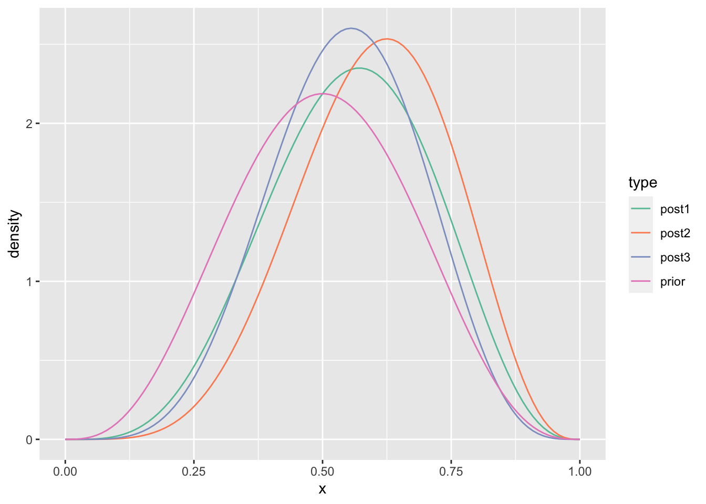
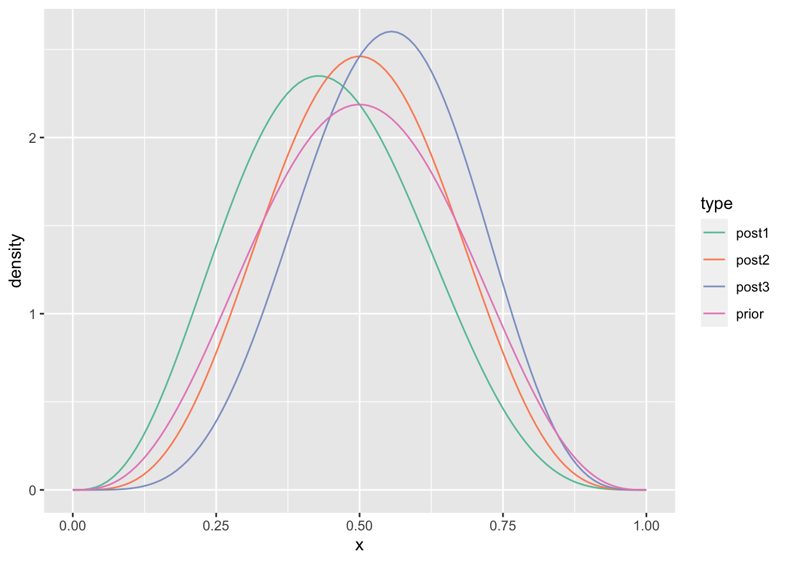
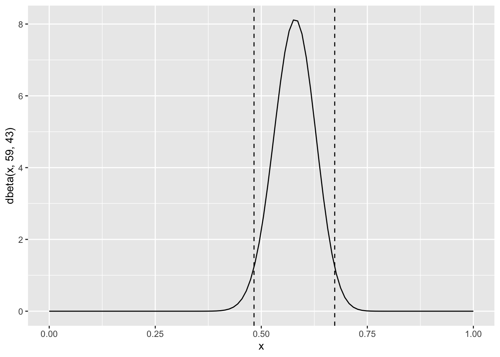
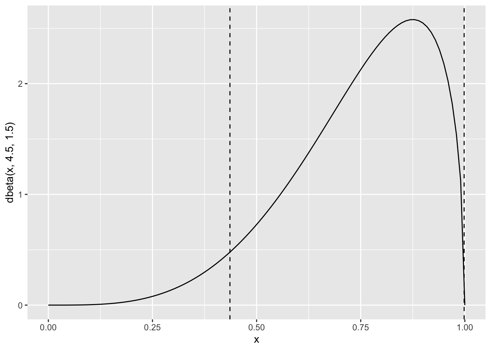
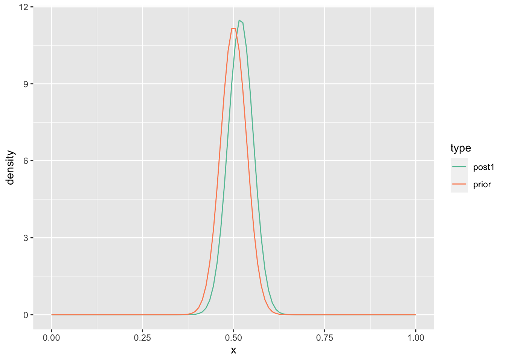
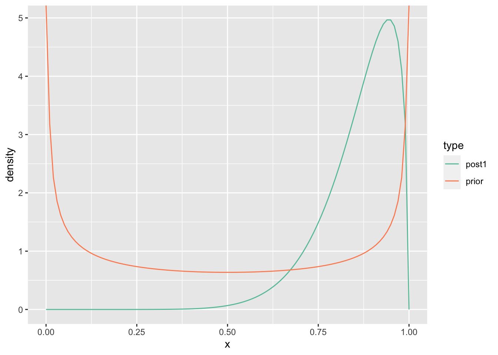
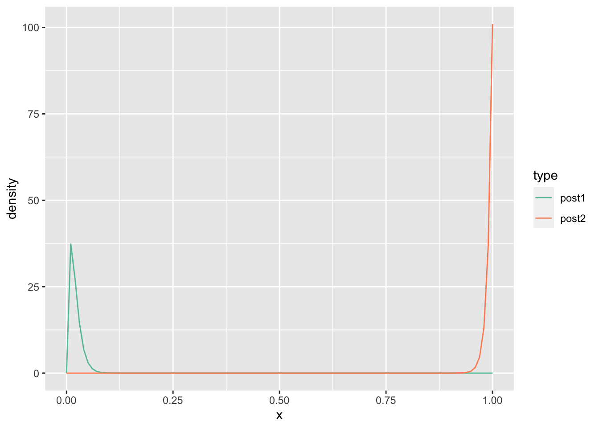
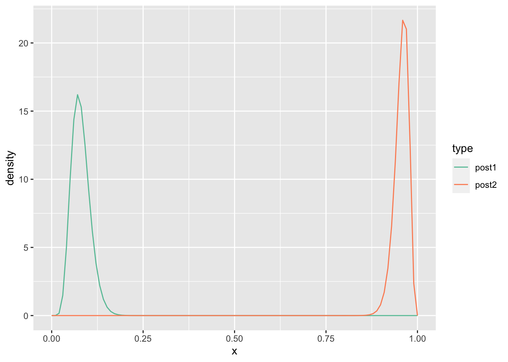
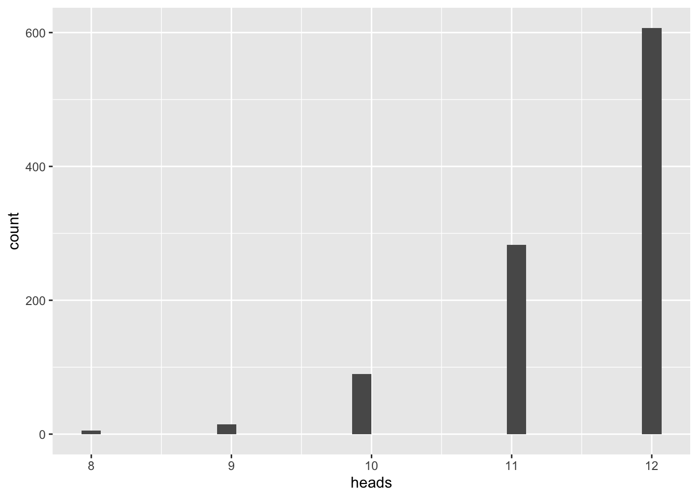

Chapter 5 Binomial Proportions via Mathematical Analysis
5.1 Excercise 5.1
# HHT Sequence
N <- 100
x <- seq(0, 1, length.out = N)
prior <- dbeta(x, 4, 4)
post1 <- dbeta(x, 5, 4)
post2 <- dbeta(x, 6, 4)
post3 <- dbeta(x, 6, 5)
tibble::tibble(x = x, prior = prior, post1 = post1,
post2 = post2, post3 = post3) %>%
pivot_longer(cols=-x, values_to="density", names_to="type") %>%
ggplot() +
geom_line(mapping=aes(x=x, y=density, color=type)) +
scale_color_brewer(palette="Set2")
# THH Sequence
N <- 100
x <- seq(0, 1, length.out = N)
prior <- dbeta(x, 4, 4)
post1 <- dbeta(x, 4, 5)
post2 <- dbeta(x, 5, 5)
post3 <- dbeta(x, 6, 5)
tibble::tibble(x = x, prior = prior, post1 = post1,
post2 = post2, post3 = post3) %>%
pivot_longer(cols=-x, values_to="density", names_to="type") %>%
ggplot() +
geom_line(mapping=aes(x=x, y=density, color=type)) +
scale_color_brewer(palette="Set2") ## Exercise 5.2
5.1.1 Part a
HDIofICDF = function( ICDFname , credMass=0.95 , tol=1e-8 , ... ) {
# Arguments:
# ICDFname is R's name for the inverse cumulative density function
# of the distribution.
# credMass is the desired mass of the HDI region.
# tol is passed to R's optimize function.
# Return value:
# Highest density iterval (HDI) limits in a vector.
# Example of use: For determining HDI of a beta(30,12) distribution, type
# HDIofICDF( qbeta , shape1 = 30 , shape2 = 12 )
# Notice that the parameters of the ICDFname must be explicitly named;
# e.g., HDIofICDF( qbeta , 30 , 12 ) does not work.
# Adapted and corrected from Greg Snow's TeachingDemos package.
incredMass = 1.0 - credMass
intervalWidth = function( lowTailPr , ICDFname , credMass , ... ) {
ICDFname( credMass + lowTailPr , ... ) - ICDFname( lowTailPr , ... )
}
optInfo = optimize( intervalWidth , c( 0 , incredMass ) , ICDFname=ICDFname ,
credMass=credMass , tol=tol , ... )
HDIlowTailPr = optInfo$minimum
return( c( ICDFname( HDIlowTailPr , ... ) ,
ICDFname( credMass + HDIlowTailPr , ... ) ) )
}## [1] 0.4828696 0.6731385x <- seq(0, 1, length.out = 100)
ggplot() +
geom_line(mapping=aes(x = x,
y = dbeta(x, 59, 43))) +
geom_vline(mapping=aes(xintercept=lim), linetype="dashed") ### Part b
Yes, it is credible to believe the population is evenly split between the two candidates (0.5 is within the 95% credible interval).
5.1.3 Part d
No, it is not credible to believe the population is evenly split between the two candidates (0.5 is outside the 95% credible interval).
5.2 Excercse 5.3
## [1] 0.6771853 0.8934740## [1] 0.1865395 0.4329478In the first case, subjects are biased towards “F”, and in the second case subjects are biased towards “J”.
5.3 Exercise 5.4
## [1] 0.4360173 0.9982900x <- seq(0, 1, length.out = 100)
ggplot() +
geom_line(mapping=aes(x = x,
y = dbeta(x, 4.5, 1.5))) +
geom_vline(mapping=aes(xintercept=lim), linetype="dashed")
5.4 Exercise 5.5
5.4.1 Part a
# HHT Sequence
N <- 100
x <- seq(0, 1, length.out = N)
prior <- dbeta(x, 100, 100)
post1 <- dbeta(x, 109, 101)
tibble::tibble(x = x, prior = prior, post1 = post1) %>%
pivot_longer(cols=-x, values_to="density", names_to="type") %>%
ggplot() +
geom_line(mapping=aes(x=x, y=density, color=type)) +
scale_color_brewer(palette="Set2")
The predicted probability for the next coin flip is the expected value of Beta(109, 101) which is \(\frac{109}{109+101} = 0.519\)
5.4.2 Part b
# HHT Sequence
N <- 100
x <- seq(0, 1, length.out = N)
prior <- dbeta(x, 0.5, 0.5)
post1 <- dbeta(x, 9.5, 1.5)
tibble::tibble(x = x, prior = prior, post1 = post1) %>%
pivot_longer(cols=-x, values_to="density", names_to="type") %>%
ggplot() +
geom_line(mapping=aes(x=x, y=density, color=type)) +
scale_color_brewer(palette="Set2")
The predicted probability for the next coin flip is the expected value of Beta(9.5, 1.5) which is \(\frac{9.5}{9.5+1.5} = 0.864\)
5.5 Exercise 5.6
N <- 100
x <- seq(0, 1, length.out = N)
# Model 1 - Fair coin
post1 <- dbeta(x, 105, 115)
prob1 <- beta(115, 105)/beta(100, 100)
# Model 2 - Biased coin
post2 <- dbeta(x, 15.5, 5.5)
prob2 <- beta(15.5, 5.5)/beta(0.5, 0.5)
tibble::tibble(x = x, post1 = post1, post2 = post2) %>%
pivot_longer(cols=-x, values_to="density", names_to="type") %>%
ggplot() +
geom_line(mapping=aes(x=x, y=density, color=type)) +
scale_color_brewer(palette="Set2")
Fair coin model probability = 1.142463110^{-6}.
Biased coin model probability = 2.293072610^{-6}.
The Bayes Factor = 0.4982237.
There is slightly more evidence in favor of the biased coin model.
5.6 Exercise 5.7
N <- 100
x <- seq(0, 1, length.out = N)
# Model 1 - Tail-biased coin
post1 <- dbeta(x, 2, 100)
prob1 <- beta(2, 100)/beta(1, 100)
# Model 2 - Head-biased coin
post2 <- dbeta(x, 101, 1)
prob2 <- beta(101, 1)/beta(100, 1)
tibble::tibble(x = x, post1 = post1, post2 = post2) %>%
pivot_longer(cols=-x, values_to="density", names_to="type") %>%
ggplot() +
geom_line(mapping=aes(x=x, y=density, color=type)) +
scale_color_brewer(palette="Set2")
Tail-biased coin model probability = 0.009901.
Head-biased model probability = 0.990099.
The Bayes Factor = 0.01.
There is significantly more evidence in favor of the head-biased coin model.
5.7 Exercise 5.8
5.7.1 Part a
N <- 100
x <- seq(0, 1, length.out = N)
# Model 1 - Tail-biased coin
post1 <- dbeta(x, 9, 104)
prob1 <- beta(9, 104)/beta(1, 100)
# Model 2 - Head-biased coin
post2 <- dbeta(x, 108, 5)
prob2 <- beta(108, 5)/beta(100, 1)
tibble::tibble(x = x, post1 = post1, post2 = post2) %>%
pivot_longer(cols=-x, values_to="density", names_to="type") %>%
ggplot() +
geom_line(mapping=aes(x=x, y=density, color=type)) +
scale_color_brewer(palette="Set2")
Tail-biased coin model probability = 2.022200910^{-12}.
Head-biased model probability = 1.490827210^{-7}.
The Bayes Factor = 1.356428810^{-5}.
There is significantly more evidence in favor of the head-biased coin model.
5.7.2 Part b
iterations <- 1000
heads <- rep(NA, iterations)
for (i in seq_along(heads)) {
theta <- rbeta(1, 108, 5)
heads[i] <- rbinom(1, 12, theta)
}
ggplot()+
geom_histogram(mapping=aes(x=heads))## `stat_bin()` using `bins = 30`. Pick better value with `binwidth`.
1000 samples of size 12 were simulated.
5.7.3 Part c
Different values of \(\theta\) were used for each simulated sample because each time we sample from the posterior distribution of \(\theta\).
5.7.4 Part d
The heads-biased model, while better than the tails-biased model, is still not a good fit to the observed data (8 heads in 12 tosses); it predicts a much higher number of heads than observed.